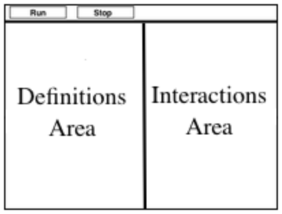

Simple Data Types
(Also available in WeScheme)
Students begin to program, explorings how Numbers, Strings, Booleans and operations on those data types work in this programming language.
|
Lesson Goals |
Students will be able to…
|
|
Student-facing Lesson Goals |
|
|
Materials |
|
|
Preparation |
|
|
Key Points For The Facilitator |
|
Boolean-
a type of data with two values: true and false
definitions area-
the left-most text box in the Editor where definitions for values and functions are written
editor-
software in which code can be written and evaluated
error message-
information from the computer about errors in code
interactions area-
the right-most text box in the Editor, where expressions are entered to be evaluated
operator-
a symbol that manipulates two Numbers and produces a result
syntax error-
errors where the computer cannot make sense of the code (e.g. - missing commas, missing parentheses, unclosed strings)
| Numbers & Strings | 20 minutes |
Overview
Working together using a Driver/Navigator group setup, students experiment with the Editor. They explore Number and String data types, and how they behave in this programming language.
Launch
 🖼Show image
When programming in this class, you’ll be working together using the Driver/Navigator model. Each group can only have one "Driver" - their hands are on the keyboard, and their job is to manage the typing, clicking, shortcuts, etc. If you’re not a Driver, you’re a "Navigator" - your job is to tell the Driver where to go, what to type, etc. A good Driver types only what the Navigator tells them to, and a good Navigator makes sure to give clear and precise instructions.
🖼Show image
When programming in this class, you’ll be working together using the Driver/Navigator model. Each group can only have one "Driver" - their hands are on the keyboard, and their job is to manage the typing, clicking, shortcuts, etc. If you’re not a Driver, you’re a "Navigator" - your job is to tell the Driver where to go, what to type, etc. A good Driver types only what the Navigator tells them to, and a good Navigator makes sure to give clear and precise instructions.
{kind=link}
The Driver/Navigator Model This model of pair programming is extremely useful for teasing apart the "thinking" step from the "typing" one. Students - especially those who are new to text-based programming or typing itself - can struggle to put their thoughts into the programming environment. This model allows them to focus on communicating their ideas, but letting the Driver focus on the coding. Likewise, the Driver has a chance to focus on syntax and programming. Finally, the requirement that ideas are translated through another person’s hands is an excellent scaffold for getting students talking about their thinking and about code. |
Have students open code.pyret.org (CPO).

{kind=link}
This screen is called the Editor, and it looks something like the diagram you see here. There are a few buttons at the top, but most of the screen is taken up by two large boxes: the Definitions Area on the left and the Interactions Area on the right.
The Definitions Area is where programmers define values and functions that they want to keep, while the Interactions Area allows them to experiment with those values and functions. This is like writing function definitions on a blackboard, and having students use those functions to compute answers on scrap paper.
For now, we will only be writing programs in the Interactions Area on the right.
Investigate
Math is a language, just like English, Spanish, or any other language. Languages have nouns (e.g. “ball”, “tomato”, etc.) and verbs, which are actions we can perform on these nouns (e.g. - I can “throw a ball”). Math and programming also have values, like the numbers 1, 2 and 3. And, instead of verbs, they have functions, which are actions we can perform on values (e.g. - “I can square a number”).
Languages also have rules for syntax. In English, for example, words don’t have ! and ? in the middle. In math and programming numbers don’t have & in them.
Languages also have rules for grammar. The cat sat. is a sentence, whereas The sat cat. is nonsense, even though all the words are valid syntax. The order of the words matters!
Keeping the importance of syntax and grammar in mind is helpful when learning to program!.
-
Complete Numbers and Strings.
-
What did you Notice? What do you Wonder?
-
Check out the Synthesize section, below, for a list key take-aways from this activity.
-
-
Did you get any error messages? What did you learn from them?
-
Most of the error messages we’ve seen were drawing our attention to syntax errors: missing commas, unclosed strings, etc.
-
|
Classroom Visual: The Language Table One of the most common visuals used by Bootstrap teachers is the Language Table. This summarizes the data types and functions students have seen so far, and serves as a useful reference for a lot of common questions. The language table has three columns: Data Type, Functions, and Values. In this lesson, students will fill in the first three rows of the table with their data types: Numbers, Strings and Booleans. As they progress through the course, they will add to the list of functions for each type as they encounter them. They may even add new rows as they discover new data types besides the ones introduced here! Each Bootstrap lesson is written to show you what the language table looks like at that point in time. You can access this table by clicking the Language Table link in the materials section at the top of the lesson plan. |
Common Misconceptions
In Pyret, writing decimals as .5 (without the leading zero) results in a syntax error. Make sure students understand that Pyret needs decimals to start with a zero!
Synthesize
Our programming language knows about many types of numbers, and they behave pretty much the way they do in math. Discuss what students have learned:
-
Numbers and Strings evaluate to themselves.
-
Our Editor is pretty smart, and can automatically switch between showing a rational number as a fraction or a decimal, just by clicking on it!
-
Anything in quotes is a String, even something like
"42". -
Strings must have quotation marks on both sides.
-
Operators like
+,-,*, and/need spaces around them. -
In pyret, the operators work just like they do in math.
-
Any time there is more than one operator being used, Pyret requires that you use parentheses to define the order of operations.
-
Types matter! We can add two Numbers or two Strings to one another, but we can’t add the Number
4to the String"hello".
Error messages are a way for Pyret to explain what went wrong, and are a really helpful way of finding mistakes. Emphasize how useful they can be, and why students should read those messages out loud before asking for help. Have students see the following errors:
-
6 / 0. In this case, Pyret obeys the same rules as humans, and gives an error. -
(2 + 2. An unclosed quotation mark is a problem, and so is an unmatched parentheses.
| Booleans | 20 minutes |
Overview
This lesson introduces students to Booleans, a unique data type with only two values: "true" and "false", and why they are useful in both the real world and the programming environment.
Launch
What’s the answer: is 3 greater than 10?
Boolean-producing expressions are yes-or-no questions and will always evaluate to either true (“yes”) or false (“no”). The ability to separate inputs into two categories is unique and quite useful!
For example:
-
Some rollercoasters with loops require passengers to be a minimum height to make sure that riders are safely held in place by the one-size-fits all harnesses. The gate keeper doesn’t care exactly how tall you are, they just check whether you are as tall as the mark on the pole. If you are tall enough, you can ride, but they don’t let people on the ride who are shorter than the mark because they can’t keep them safe.
-
When you log into your email, the computer asks for your password and checks whether it matches what’s on file. If the match is
trueit takes you to your messages, but, if what you enter doesn’t match, you get an error message instead.
Brainstorm other scenarios where Booleans are useful in and out of the programming environment.
Investigate
-
In pairs, complete Booleans.
On this worksheet, students will make predictions about what a variety of Boolean expressions will return and testing them in the editor. Debrief student answers as a class.
Synthesize
What sets Booleans apart from other data types?
These materials were developed partly through support of the National Science Foundation,
(awards 1042210, 1535276, 1648684, and 1738598).  Bootstrap by the Bootstrap Community is licensed under a Creative Commons 4.0 Unported License. This license does not grant permission to run training or professional development. Offering training or professional development with materials substantially derived from Bootstrap must be approved in writing by a Bootstrap Director. Permissions beyond the scope of this license, such as to run training, may be available by contacting contact@BootstrapWorld.org.
Bootstrap by the Bootstrap Community is licensed under a Creative Commons 4.0 Unported License. This license does not grant permission to run training or professional development. Offering training or professional development with materials substantially derived from Bootstrap must be approved in writing by a Bootstrap Director. Permissions beyond the scope of this license, such as to run training, may be available by contacting contact@BootstrapWorld.org.